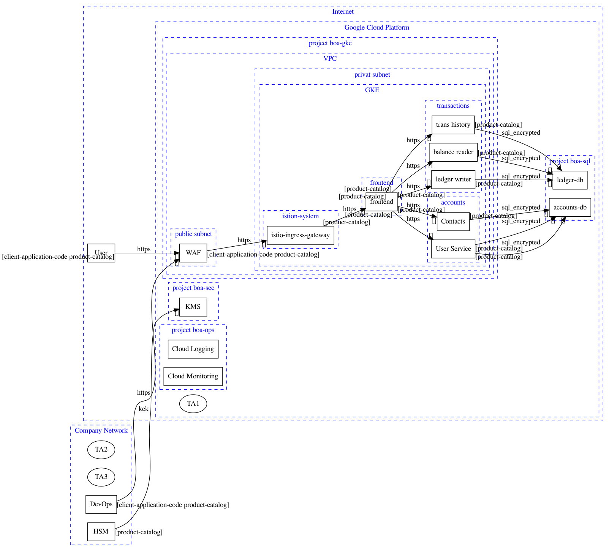

The Data Flow Diagram below provides an overview of the analyzed architecture. 
| Name | Technology | Description |
|---|---|---|
| Internet | internet | Internet |
| Google Cloud Platform | internet | Google Cloud |
| project boa-gke | subscription | Google Project |
| VPC | vpc | Virtual Private Cloud |
| public subnet | subnet | internet facing zone |
| privat subnet | subnet | Application Network |
| GKE | kubernetes-cluster | kubernetes cluster |
| frontend | kubernetes-network-policies | kubernetes frontend namespace |
| accounts | kubernetes-network-policies | kubernetes default namespace |
| transactions | kubernetes-network-policies | kubernetes default namespace |
| istion-system | kubernetes-network-policies | kubernetes istio-system |
| project boa-sql | cloud-services | Azure Shared Services |
| project boa-sec | project | Contains Secret Manager and KMS instances for secrets that are specific to the Bank of Anthos application. |
| project boa-ops | project | Used for storing environment logs as well as monitoring the environment instance of the Bank of Anthos application. |
| Company Network | on-premise | trusted on-premise company network |
| Name | Technology | Description |
|---|---|---|
| User | browser | The browser used by the end customer |
| DevOps | devops-client | laptop used by developers and operators to manage the system |
| WAF | waf | Google Cloud Armor Web Application Firewall |
| istio-ingress-gateway | kubernetes-ingress | ISTIO ingress gateway |
| frontend | kubernetes-pod | Exposes an HTTP server to serve the website. Contains a login page, a signup page, and a home page. |
| User Service | kubernetes-pod | |
| Contacts | kubernetes-pod | Stores a list of additional accounts that are associated with a user. These accounts are listed in the application's Send Payment and Deposit forms. |
| User Service | kubernetes-pod | Manages user accounts and authentication. The service signs JWTs that are used for authentication by other services. |
| ledger writer | kubernetes-pod | Accepts and validates incoming transactions before writing them to the ledger. |
| balance reader | kubernetes-pod | Provides an efficient readable cache of user balances, as read from ledger-db. |
| trans history | kubernetes-pod | Provides an efficient readable cache of past transactions, as read from ledger-db. |
| accounts-db | database-sql | SQL database |
| ledger-db | database-nosql | CloudSQL for hyperledger |
| KMS | hsm | Google Key Management Service |
| HSM | hsm | on-premise Harware Security Module (HSM) |
| Cloud Logging | logging | Cloud Monitoring |
| Cloud Monitoring | monitoring | KMS |
The following data assets are used:
| Name | Description | C | I | A |
|---|---|---|---|---|
| A1 | Angular and other client-side code delivered by the application. | 1 | 1 | 1 |
| A2 | OIDC identity token | 2 | 1 | 1 |
| A3 | OAuth2 access token | 2 | 1 | 1 |
| A4 | OAuth2 refresh token | 2 | 1 | 1 |
| A5 | product catalog | 1 | 1 | 1 |
| A6 | root certificates | 3 | 2 | 2 |
The following threat agents are used:
| Name | Description |
|---|---|
| TA1 | external threat agent |
| TA2 | authorized employee |
| TA3 | Employee of the company that is not authorized to access the system |
| Overall Risk Severity = Impact x Likelihood | |||||
|---|---|---|---|---|---|
| Impact | HIGH | Medium | High | Critical | |
| MEDIUM | Low | Medium | High | ||
| LOW | Low | Low | Medium | ||
| LOW | MEDIUM | HIGH | |||
| Likelihood | |||||
The following risks have been identified:
| ID | Likelihood | Impact | Severity | Risk |
|---|---|---|---|---|
| 0 | LOW(1) | HIGH(3) | LOW(3) |
CWE-319 Unencrypted Communication: asset 'hsm' communicating to 'kms' uses insecure protocol 'ftp' Data at transition should be encrypted. Mitigation: apply an authentication method to the technical asset. |